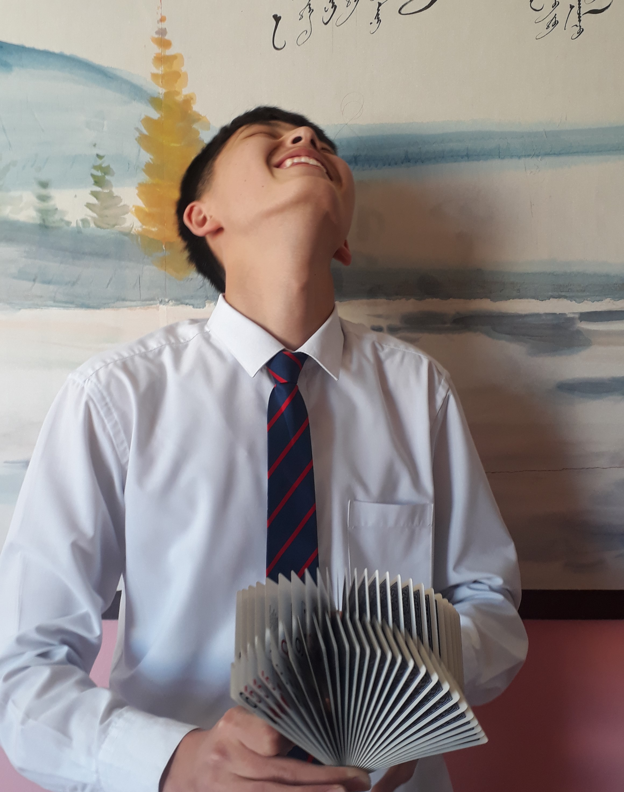

Батцэнгэл Энхмандал
Мэргэжил: Програм хангамж
SISI ID: 20B1NUM1582
Утасны дугаар: 88469991
Mail: mandalgej@gmail.com

Намтар
Миний бие Б. Энхмандал нь 2002 онд Улаанбаатар хотод төрж, Орхон аймагт өсөж хүмүүжсэн ба аав ээж дүүгийн хамт амьдардаг.Орхон аймгийн БУГС-тай 14-р дунд сургуулийг 2020 онд төгссөн ба одоогоор Монгол улсын их сургуульд програм хангамж мэргэжлийн 2-р түвшн суралцаж байна.Хобби
- Чөлөөт цагаараа сагс тоглох дуртай ба 1-р зэрэгтэй.
- Волейбол болон ширээний теннисээр хичээлэлж байгаа.
- 2017 оноос хөзрийн илбээр хичээллэж хөзөр цуглуулах хоббитой болсон.
- Гитар тоглох дуртай ба хичээллээд 3 жил болж байна.
- Хар зураг зурах сонирхолтой
Soft skill
- Багаар ажиллах чадвартай
- Ярилцах бусадтай ойлголцох чадвартай
- Цагийн менежмэнт
Hard skill
- C, С++, javascript-үүд дээр ажиллана
- MS powerpint, exel зэрэгүүдийг хэрэглэж чадна.